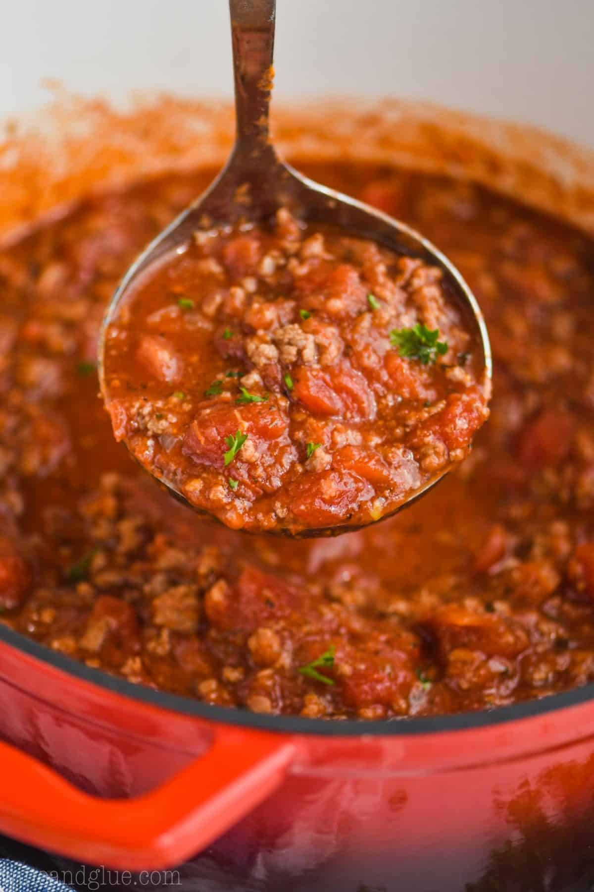

Delicious meat sauce recipe!

Italian style meat sauce, just like your grandma used to make!
This incredibly rich meat sauce recipe is one that has been passed
down for 7 generations.
This has allowed a perfect mix of old and contemporary influences to work
its magic on this mouth watering recipe. Try it and see for yourself!
Ingredients:
- 400g ground beef
- 200g italian sausage
- One large chopped onion
- 6 clove garlic
- One tablespoon basil
- One tablespoon oregano
- half teaspoon of salt
- quarter teaspoon freshly ground black pepper
- 400g can of tomato sauce
- 2 tablespoon of tomato paste
- 2 cups of beef broth
Steps:
- Brown the ground beef on stove-top pan
- Once beef is brown, add chopped onion and brown
- Add garlic once onions are browned
- Add basil and oregano
- Add tomato sauce and paste and stir
- Add salt and pepper and stir
- Add beef broth, stir and let reduce for a few hours on very low heat